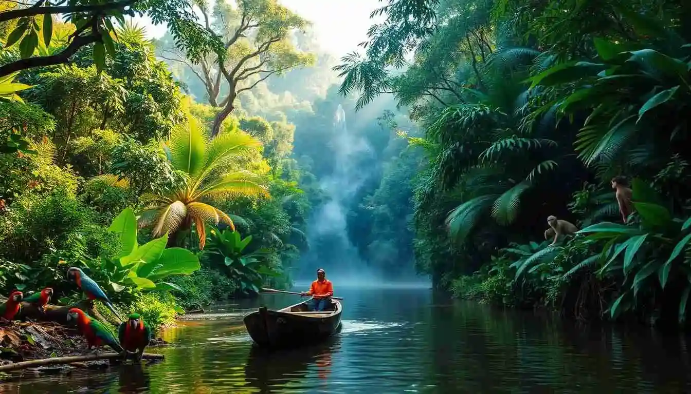

Amazon Rainforest Expeditions
8-14 day immersive journeys led by indigenous Quechua and Yanomami guides. Visit remote jungle lodges powered by renewable energy, spot jaguars and macaws, participate in forest restoration projects, and support indigenous land rights.
Explore Amazon